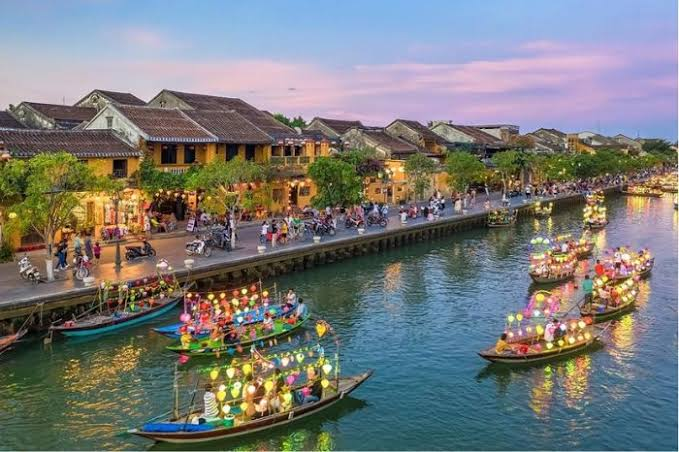
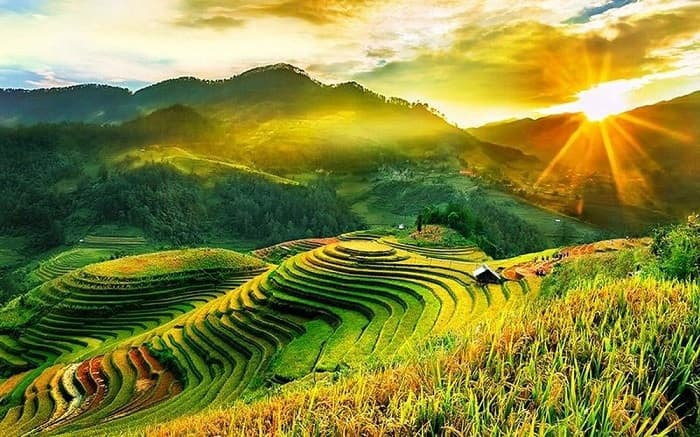
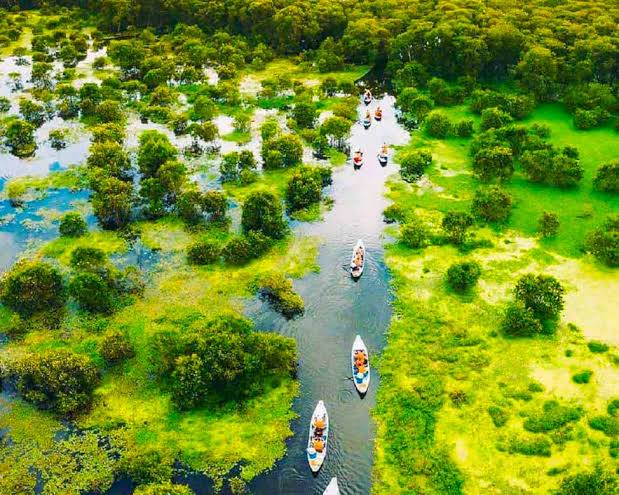
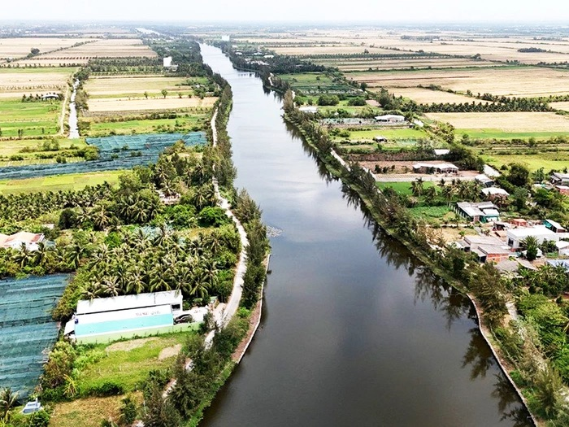
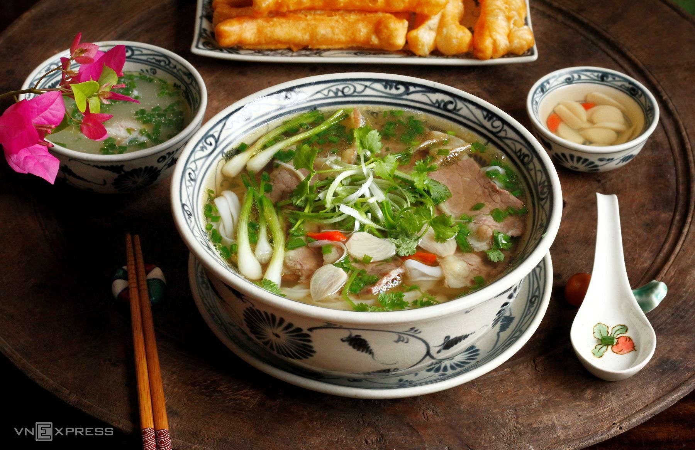
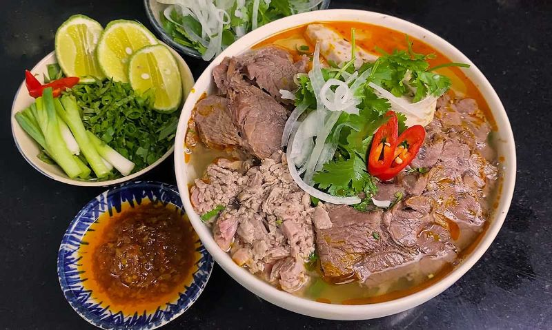
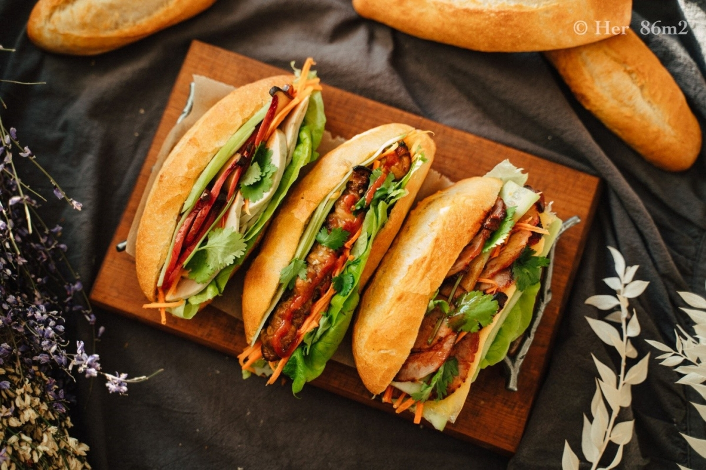

Quảng Ninh
Vịnh Hạ Long
Di sản thiên nhiên nổi tiếng với hàng nghìn đảo đá giữa làn nước xanh kỳ ảo.
Đang tải trải nghiệm premium plus...
Việt Nam là bức tranh hài hòa giữa thiên nhiên, lịch sử, văn hóa và ẩm thực. Từ núi rừng, biển đảo đến phố cổ, làng quê và những lễ hội truyền thống, mọi điều đều tạo nên một vẻ đẹp rất riêng.
Núi non, biển đảo, đồng bằng và nhiều cảnh sắc trải dài khắp ba miền đất nước.
Những giá trị lịch sử, kiến trúc và truyền thống tạo nên chiều sâu bản sắc Việt.
Nền ẩm thực phong phú, tinh tế, mang hương vị riêng biệt của từng vùng miền.
Việt Nam là nơi giao hòa của nhiều cảnh quan thiên nhiên, nhiều sắc thái văn hoá và chiều sâu lịch sử lâu đời. Mỗi vùng đất đều mang một vẻ đẹp rất riêng.
Từ nhịp sống hiện đại của đô thị đến sự bình yên nơi làng quê, từ lễ hội truyền thống đến món ăn dân dã, tất cả góp phần làm nên một Việt Nam vừa gần gũi vừa cuốn hút.
Tỉnh thành
Miền văn hoá lớn
Dân tộc anh em
% Tự hào Việt Nam
Di sản thiên nhiên nổi tiếng với hàng nghìn đảo đá giữa làn nước xanh kỳ ảo.

Không gian cổ kính, đèn lồng rực rỡ và vẻ đẹp bình yên rất riêng.
Nơi lưu giữ chiều sâu lịch sử, kiến trúc cung đình và vẻ dịu dàng thơ mộng.

Vẻ đẹp ngoạn mục của núi rừng và sức sáng tạo bền bỉ của con người vùng cao.

Phóng khoáng, gần gũi, sôi động với nhịp sống hiện đại và vẻ đẹp sông nước.

Miệt vườn trù phú, chợ nổi đặc trưng và nét mến khách chân tình của người dân.
Đậm chiều sâu lịch sử, cảnh sắc bốn mùa, nét đẹp cổ kính và giá trị truyền thống lâu đời.
Nổi bật với di sản, biển đẹp, cố đô, phố cổ và nhiều thành phố du lịch hấp dẫn.
Phóng khoáng, sôi động, hiện đại nhưng vẫn đậm đà bản sắc sông nước và đời sống cộng đồng.

Văn hoá Việt Nam là sự kết tinh của lịch sử, cộng đồng và lòng yêu quê hương. Từ áo dài, nón lá, dân ca, làng nghề đến những phong tục đẹp, tất cả đều tạo nên nét riêng.
Giỗ Tổ Hùng Vương là dịp nhắc nhớ về cội nguồn dân tộc, thể hiện đạo lý uống nước nhớ nguồn và sự tri ân đối với công lao dựng nước của cha ông.

Món ăn biểu tượng với nước dùng thanh đậm, hương thơm đặc trưng và cách thưởng thức tinh tế.

Hương vị đậm đà miền Trung, nổi bật bởi mùi thơm và màu sắc đầy hấp dẫn.

Lớp vỏ giòn, phần nhân phong phú và sự gần gũi khiến món ăn này luôn được yêu thích.

Thanh mát, hài hoà, thể hiện sự tinh tế trong nguyên liệu và cách chế biến của người Việt.


Việt Nam nổi bật bởi thiên nhiên đa dạng, di sản văn hoá phong phú, ẩm thực hấp dẫn và con người thân thiện.
Mỗi miền có khí hậu, văn hoá, giọng nói, món ăn và nét sống riêng, tạo nên sự phong phú của bản sắc dân tộc.
Ẩm thực Việt Nam chú trọng sự hài hoà về hương vị, màu sắc, nguyên liệu và cách trình bày rất tinh tế.
Bạn có thể dùng phần này như khu vực liên hệ, góp ý hoặc đăng ký nhận thông tin mới cho website khi đưa lên GitHub Pages.
Một đất nước đẹp bởi thiên nhiên, sâu sắc bởi văn hoá và đáng nhớ bởi tình người.